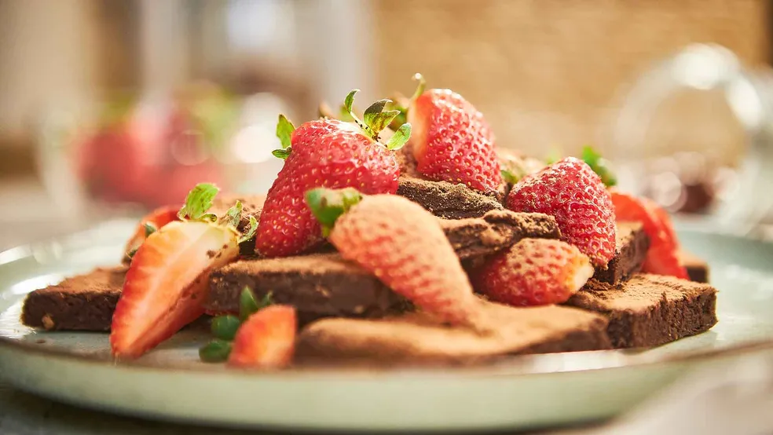
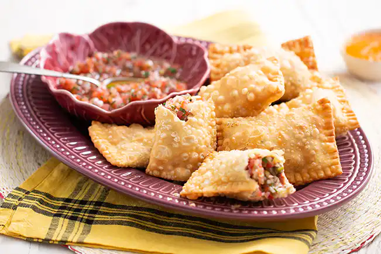
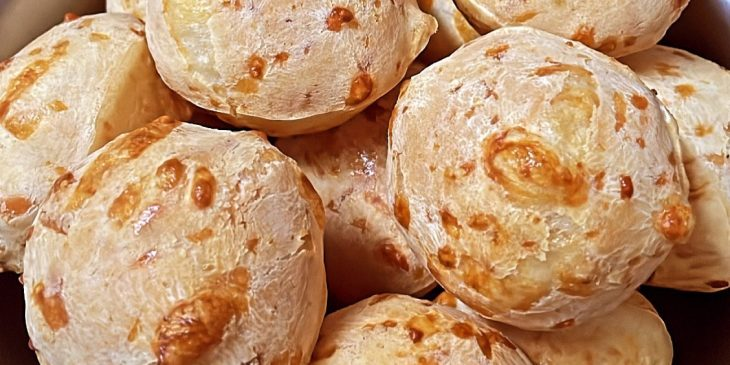

Brownie Simples de Cacau
Brownie Simples de Cacau
Ingredientes
- 2 xícaras de tâmaras sem caroço
- Três quartos de xícara de cacau em pó
- Um terço de xícara de óleo de coco
- 2 ovos
- 1 colher de chá de extrato de baunilha
- 1 pitada de sal
- 1 colher de chá de canela em pó
Modo de Preparo
- Deixe as tâmaras na água em tempera ambiente por 1 hora e 30 minutos, ou em água quente por 30 minutos, assim elas vão amolecer.
- Escorra a água das tâmaras.
- No liquidificador, coloque as tâmaras sem o caroço, o cacau em pó, o óleo de coco, os ovos, o extrato de baunilha, o sal e a canela em pó.
- Bata tudo até que fique uma massa homogênea.
- Unte a assadeira com óleo de coco e despeje a mistura do liquidificador sobre ela.
- Nivele bem a massa e leve ao forno a 170 graus Célsius por 20 minutos.

Receita de Pastel
Ingredientes
- 1 kg de farinha de trigo
- 1/2 xícara (chá) de óleo
- 1 colher (sopa) sal
- 1 ovo
- 1/2 dose de pinga
- 1 colher (chá) vinagre
- 250 ml de água
Modo de Preparo
- Misture os ingredientes em uma tigela e amasse com as mãos.
- Sove bem a massa sobre uma superfície lisa enfarinhada.
- Utilize um rolo para esticar a massa e deixá-la na espessura desejada.
- Corte a massa no tamanho que quiser fazer os pastéis.
- Recheie de acordo com a sua preferência.
- Frite em óleo bem quente.

Receita de Pão de Queijo
Ingredientes
- 1 caixinha de creme de leite (200 ml)
- 1 copo (requeijão) de queijo ralado
- 1 copo (requeijão) de polvilho
Modo de Preparo
- Amasse até soltar das mãos (caso precise um pouquinho a mais de polvilho, coloque aos poucos até que chegue ao ponto de enrolar).
- Faça bolinhas, coloque em forma untada e asse em forno preaquecido bem quente.
- Se achar necessário, acrescente sal.
- Asse até ficarem douradinhos levemente.